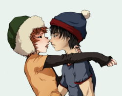

Fanfiction
 De: La Frikipedia, la enciclopedia extremadamente seria.
De: La Frikipedia, la enciclopedia extremadamente seria.
Típicas escritoras de fanfiction
«Y así, el león se enamoró del cordero»
~ Fragmento de Crepúsculo un fanfiction típico
«OMG!! Tienes TIENES que continuar el fic!!! si no actualizas sufrirás una muerte lenta y dolorosa de mi parte!! perdona, pero es que me encanta tu historia :P»
~ Fanfiquer típica mostrando su esquizofrenia
«OMG!! Tu fic es tan malo que deberian tirarlo por el retrete!! Y mas te vale que lo modifiques o perderas tus preciosas historias muajajajaja»
~ Fanfiquer creyéndose hacker
«¿Por qué clase de obsesas locas nos toman? ¡¡No porque escribamos quinientas paginas de sexo anal entre Naruto y Sasuke significa que no tengamos vida!!»
~ Grupo de fanfiquers defendiéndose inútilmente
Fanfiction, (Ficción del Fan) se llama así a las historias basadas en una obra previa creadas por frikis sin vida propia que se pasan las 24 horas del día fantaseando con gente que no existe.
Se creo, allá, por 1900, cuando se estrenaron las Star Wars, y los fanáticos necesitaban más y más de su droga.
A medida que pasaban los siglos, fueron aumentando las fuentes de inspiración de estos autores frustrados, y con la venida al mundo del internet, empezaron a publicar a diestra y siniestra por todas partes.
Hoy en día la cantidad de fanfics de Harry Potter asciende a cuatro tronchillones y medio.
Géneros
Dentro del amplio y maravilloso mundo del fanfiction, podemos encontrar diversos géneros, que se adecúan a cada tipo de esquizofrenia.
- Romance: Es el más popular. Como su nombre lo indica, consiste en una historia de amor donde generalmente la pareja termina casada o muerta. En casos graves, los fics de romance tienen la longitud de un libro entero y duran 5 años o más en ser terminados.
- Poesía: Aquí es donde las escritoras quieren superar a Neruda pero solo les salen tronchos dignos de niño de diez años.
- Yaoi o Slash: Donde a las chavalas les gusta escribir sobre los rolletes apasionados que tienen Harry y Severus debajo de una mesa, o el sexo en la ducha entre Vegeta y Goku.
- Yuri o Femslash: Menos frecuente, pero viene a ser los líos amorosos de Xena la princesa guarrilla con Gabrielle. Estos suelen pertenecer al mundo del sado.
- Angst: Este género es de los más populares, consiste en coger a tu personaje favorito,y torturarlo, violarlo, enfermado de cáncer, matar a su familia, Famosos angst-personajes son Naruto, Legolas, Kenshin y Kamus de acuario.
- Lemon: Aquí expresas todo tu
deseo sexual frustrado conocimiento sobre reproducción haciendo que tus dos personajes favoritos follen hasta quedar sin aire ni orificios llenables.
- Horror:: Se supone que son de terror; pero Pikachu, avido lector de fanfiction en sus ratos libres, asegura que ninguno da verdadero miedo.
- Chan: Género para los pedófilos que después verás en las noticias
Existe fanfiction de:
- Naruto: Menos peligrosos, generalmente escritos por niñas de 12 años.
Clasificaciones
- G: Tus sobrinos de 5 años pueden leerlos
- PG: Deben ser leídos en compañía de tus viejos
- PG-13: Son los que todo el mundo lee
- R: Para cuando ya has salido del cole
- M: Sexo!! Porno!!
- MA: Hábitat de gente transtornada.
Lo que más cuesta comprender a todos los competentes científicos frikipédicos, es que a pesar de las advertencias, carajitas de 12 años aman leer desde PG-13 hacia arriba.
Nicks típicos de fanfiqueros
- EmilyNeruda19
- Diosa_Atenea_ReDivina
- Elizabeth Hemingway
- Lean_mis_fics_estoy_desesperada
- ElverdaderoamordeEdward
- Para los otakus: Mer-chan, Mer-kun, Mer-sama, Eli and Onee-chan(un apelativo de su nombre con un sufijo)
Como hacer un buen fanfic
- Título atrayente. Por ejemplo: "La primera vez de Legolas".
- Sumario o resumen. Atrae a tus lectores con frases como: "lean, y me harán feliz :)", "por favor, dejen review!!!", "es mi primer fanfic, sean buenos!" y demás mariconadas por el estilo. (A meno que sitios como este lo prohíban.)
- Género. Si quieres ser loser que no escribe fanfiction y tiene vida propia), escoge el yaoi o el chan, aunque te transtorne la mente. Las páginas de fanfiction cubren los gastos médicos.
- Contenido.
Plagia Usa como guía a otros autores y escribe lo que te salga de los ovarios. Puedes inspirarte en el hentai, películas, canciones o tu propia y patética vida.
- Dedicatorias Debes siempre lamerles el culo a los que te comentan tu historia, de lo contrario se enojarán contigo para siempre y dejarán de leerte. Termina cada capítulo con un "los amo!!!! gracias por leer, en serio!! sin ustedes no sería nada, me hacen feliz :')"
Reviews
Un/a buen/a fanfiquero/a no debe limitarse a ver sus patéticas geniales obras, sino que debe explorar el mundo virtual en busca de otras grandes historias pornográficas. Además, es importante que un/a autor/a deje constancia de su lectura, dejando su humilde opinión, con comentarios del estilo "Me GuStO MuXo SIgElo" o "CoNtI plzzzzzz *.*", donde demuestran su gran habilidad escribiendo. Por último, un review de este nivel debe añadir un "PsAtE x L Mío & Dja ComNt, sI?". La lectura de estas humildes opiniones no hacen más que desear sacarte los ojos sentir envidia por tal maestría.
La importancia del fanfiction en el mundo
Estudios recientes realizados a lo largo del Planeta agostini, han llegado a la conclusión de que millones de jovencitas no podrían realizarse personalmente sin escribir estos libretos.
El fanfiction les ayuda a expresar sexualmente lo que los estándares sociales habituales no las dejan expresar. Recuerda, si no escribieran fanfiction saldrían a la calle a violar niños y/o perros.
Los fanfics no los dejan dormir por la noche, por estar fataseando con un Sasunaru?
 Stan/Kyle, una de las parejas favoritas del fan fiction
Si por estas chicas fuera, el 90% de la población masculina seria gay, o por lo menos bisexual. El porqué de esta obsesión, todavía no está muy claro, pero se están siguiendo varias pistas que conducen a una posible contaminación del licor de melocotón que estas personitas suelen consumir los fines de semana.
Como distinguir a un fanfiquero
- El 99% son mujeres entre 13 y 23 años terrestres (6 Barridos solares Alternienses - +9 Barridos solares Alternienses). En casos graves, llegan a sobrepasar los 29 años.
- Se les reconoce por ver de manera continuada el mismo anime o manga una y otra vez, normalmente con los ojos enrojecidos y la expresión perdida.
- Cada vez que ven a dos hombres a menos de un metro de distancia les salen estrellitas en los ojos
- Están tan obsesionadas con el fanfiction que llegan al punto de hackear cuentas y crear artículos frikipédicos sobre fanfiquers que a nadie le importan
- Creen que el mundo real es el del manga/libros y que nosotros vivimos en un mundo paralelo
- Son adictas a los reviews (En serio, es deprimente.)
- Pasan el 90% de su tiempo escribiendo o leyendo, la otra parte la usan para soñar con parejas
yaoi 100% heteras.
- Se dicen "escritoras"
- Se llaman entre ellas con los nombres de sus libros/animes favoritos
- Los errores de ortografía pueden conducirlas al infarto o al aneurisma, así que tenga cuidado de no escribir "b" en vez de "v" delante de ellas. En casos graves crean una pagina donde pueden
Insultar aconsejar a las escritoras.
- Llegan sufrir ataques psicóticos al ver un fic con mucho Fandom.
- No saben un cacho de HTML por lo que arruinan constantemente sus blogs/páginas personales.
- Sueñan con escribir grandes obras como "Cómo ser feliz", "300 maneras de tener el mejor sexo de tu vida", "Cómo llegar a los 40 y seguir siendo sexy", "Los 100 secretos de la gente sin arrugas"
- Se enojan porque Harry se casó con Ginny y no con ellas
- creen que naruto va terminar con sasunaru
¿Dónde están?
Fanfiction.net
Mediaminer
Fanfic.es
Adultfanfcition
Amor Yaoi
Mundo Yaoi
MundoFanfiction
Fanficslandia
Autor(es):
- Nexo
- Roms
- Frikih
- PaladinImperial
- Kitiara
- ArreKarallo
- Veni Vidi Vici
- Levicorpus
- Naruko
- Kevrochi
Frikipedia 2005-2016, Licencia
GFDL 1.2 - Extraído por FrikiLeaks